Référentiel
Un référentiel se compose d'un solide de référence par rapport auquel on étudie la trajectoire, et d'une horloge permettant de repérer les dates à chaque position.
1) Référentiel terrestre
Lié à la Terre, adapté à l'étude du mouvement d'un objet proche de la surface terrestre. Tout objet fixe par rapport à la Terre peut servir de référentiel terrestre. On utilise le repère cartésien (O ; i ; j ; k), d'origine O fixe et de vecteurs unitaires constants.
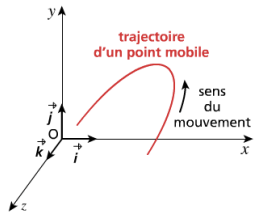
2) Référentiel géocentrique
Lié au centre de la Terre, utilisé pour l'étude du mouvement des satellites. Les 3 axes pointent vers des étoiles lointaines fixes (galiléen si l'étude ne dépasse pas quelques heures, pour négliger la rotation de la Terre autour du Soleil).
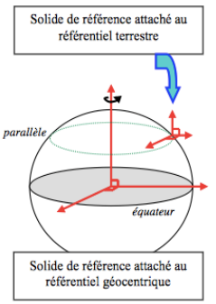
3) Référentiel héliocentrique
Lié au centre du Soleil, utilisé pour l'étude du mouvement des planètes, qui décrivent chacune une orbite elliptique autour du Soleil. Les 3 axes pointent vers des étoiles lointaines fixes.
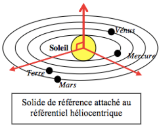
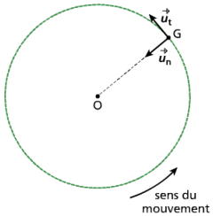
Exercice — Appliquer les notions de référentiel et de repère
Pour faire la synthèse de cette fiche prérequis, regardez la vidéo bilan sur les référentiels et les repères :
🎬 Voir la vidéo bilan — Référentiels & repèresQCM prérequis — Référentiels et repères
Pour réviser avant le cours, faites le QCM en ligne (Hatier) sur les référentiels et les repères :
📋 Ouvrir le QCM prérequis (Hatier)Caractéristiques d'un vecteur force
Une force est une grandeur vectorielle entièrement définie par 4 caractéristiques :
| Caractéristique | Définition |
|---|---|
| Point d'application | Point où s'exerce la force sur le système (ex. : centre de masse G pour le poids) |
| Droite d'action (portée) |
Droite sur laquelle est porté le vecteur force ; la portée est la droite infinie qui contient le vecteur (direction) |
| Sens | Indiqué par la flèche sur le vecteur ; deux sens possibles sur une droite d'action |
| Norme (valeur) | Longueur du vecteur, exprimée en newton (N) ; représentée par l'échelle choisie (1 cm = x N) |
Force gravitationnelle & poids
La force gravitationnelle, toujours attractive, avec G = 6,67.10⁻¹¹ m³.kg⁻¹.s⁻².
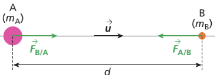
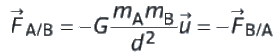
Le poids d'un objet de masse m est la force gravitationnelle exercée par la Terre : vertical, vers le bas, de valeur P = m·g.
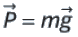
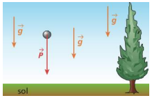
Exercice — Le champ de pesanteur est uniforme
Mise en situation : une pomme (m₁ = 150 g) et une enclume (m₂ = 80 kg) sont lâchées au même endroit, en haut d'une falaise, dans le champ de pesanteur g.
Force électrique (Coulomb)
Avec K = 9,0.10⁹ N.m².C⁻². Répulsive si charges de même signe, attractive si signes opposés.
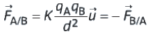
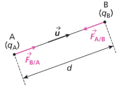
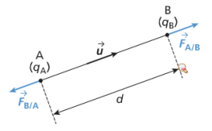
Pour visualiser les lignes de champ et la force d'interaction selon le signe des charges, ou comparer avec le cas gravitationnel :
🧲 Simulation — Forces et champs électrostatique & gravitationnelExercice interactif — Carte du champ électrostatique créé par deux charges
matplotlib.quiver, la carte ci-dessous représente la direction et le sens du champ électrostatique E créé en chaque point de l'espace par deux charges ponctuelles A et B (les flèches sont normalisées : seules leur direction et leur sens sont représentatifs, pas leur norme). Changez le signe des charges et observez comment la carte du champ se transforme.Forces de contact
La réaction du support se décompose en réaction normale et réaction tangentielle (frottement solide).
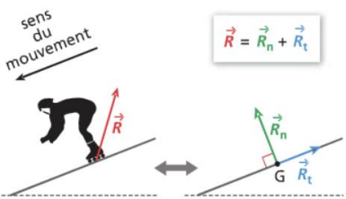
Pour un fluide : poussée d'Archimède (verticale, vers le haut) et frottement fluide (opposé au mouvement).
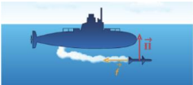
La tension d'un fil inextensible est dirigée le long du fil, vers l'extrémité opposée au système.
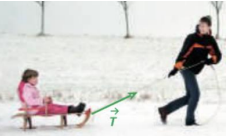
Exercice — Identifier et calculer les forces
Pour faire la synthèse de cette fiche prérequis, regardez la vidéo bilan sur les forces :
🎬 Voir la vidéo bilan — Rappels de forcesVecteur position et équations horaires
Dans un référentiel donné, à tout instant t, un point G est repéré par son vecteur position OG(t) dont les coordonnées dans le repère cartésien (O ; i ; j ; k) sont les équations horaires de position :
Norme (longueur du vecteur position, en m) :
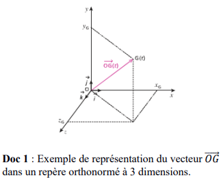
x(t) − x(t=0) ; y(t) − y(t=0) ; z(t) − z(t=0)
soit, avec O à l'origine à t=0 : x(t) ; y(t) ; z(t)
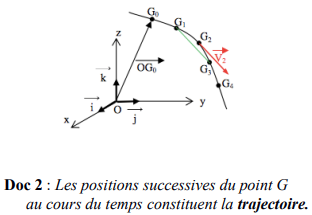
Définition
vG déf = limΔt→0 vGG' = limΔt→0 [OG(t+Δt) − OG(t)] / Δt
Le vecteur vitesse caractérise la variation du vecteur position en fonction du temps : c'est la dérivée du vecteur position par rapport au temps. Il en résulte que le vecteur vitesse est tangent à la trajectoire au point considéré.
Caractéristiques du vecteur vitesse : direction tangente à la trajectoire au point considéré, sens celui du mouvement.
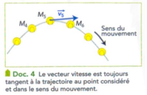
Définition
aG déf = limΔt→0 [v(t+Δt) − v(t)] / Δt
Un objet a un vecteur accélération non nul si la valeur de sa vitesse varie et/ou si le vecteur vitesse change de direction. Le vecteur accélération est donc la dérivée du vecteur vitesse par rapport au temps (et donc la dérivée seconde du vecteur position).
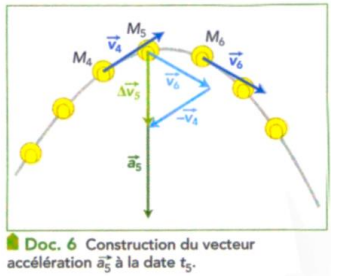
Exemple : x(t) = 3t² + 2t − 5 ⟹ vx(t) = 6t + 2.
📐 Capacité mathématique — La primitive
Vous savez déjà dériver : c'est l'opération qui fait passer de la position à la vitesse, puis de la vitesse à l'accélération. La primitive est l'opération inverse — tout comme diviser est l'inverse de multiplier.
| OG(t) | —— dérivée ——▶ | v(t) | —— dérivée ——▶ | a(t) |
| ◀—— primitive —— | ◀—— primitive —— |
Règle de calcul : la primitive de a·tn est a·tn+1/(n+1) + C, où C est une constante déterminée par les conditions initiales (valeur connue à t = 0).
| Vous savez dériver → | Fonction f(t) | ← Il faut savoir primitiver |
|---|---|---|
| Dérivée f′(t) | Primitive F(t) + C | |
| 0 | c (constante) | c·t + C |
| a | a·t | ½·a·t² + C |
| 2a·t | a·t² | ⅓·a·t³ + C |
| n·a·tn−1 | a·tn | a·tn+1/(n+1) + C |
Le PFD donne l'accélération : ay(t) = −g = constante.
Primitive de ay : vy(t) = −g·t + C₁
À t = 0 : vy(0) = vy0 (donné) ⟹ C₁ = vy0 ✓
Primitive de vy : y(t) = −½g·t² + vy0·t + C₂
À t = 0 : y(0) = y₀ (donné) ⟹ C₂ = y₀ ✓
À chaque étape, la constante C se détermine grâce à la condition initiale (valeur connue à t = 0).
✏️ Activité — Construire les équations vectorielles
Faites glisser chaque terme dans la bonne case pour compléter les vecteurs, dans l'écriture par coordonnées puis dans l'écriture en base ux, uy, uz.
Complétez maintenant la même position et la même vitesse, mais écrites dans la base ux, uy, uz :
Exercice — Dérivation de vecteurs
Quatre types de mouvements à connaître
- Rectiligne uniforme : trajectoire droite, vitesse constante ⟹ a = 0.
- Rectiligne uniformément varié : trajectoire droite, valeur de la vitesse fonction linéaire du temps ⟹ a constant, colinéaire à la trajectoire (sens du mouvement si accéléré, opposé si ralenti).
- Circulaire uniforme : trajectoire circulaire, valeur de la vitesse constante ⟹ a centripète (porté par le rayon, vers le centre), de norme constante : a = (v²/R) un.
- Circulaire non uniforme : trajectoire circulaire, valeur de la vitesse variable ⟹ a = (dv/dt) ut + (v²/R) un (composante tangentielle + composante normale).
À vous de tracer le vecteur vitesse à partir d'un cliché chronophotographique, comme les points ci-dessus :
QCM — Caractériser un mouvement
1re loi — Principe d'inertie
Dans un référentiel galiléen, lorsqu'un système matériel est pseudo-isolé (forces qui se compensent) ou isolé (aucune force), alors : soit il est au repos, soit le mouvement de son centre d'inertie est rectiligne uniforme (vecteur vitesse constant). La réciproque est vraie.
• Réciproque (vraie ici — c'est ce qui est précisé dans l'énoncé de la loi) : si un système est au repos ou en mouvement rectiligne uniforme (MRU), alors il est pseudo-isolé (ou isolé).
• Contraposée (toujours vraie) : si le mouvement du système n'est pas rectiligne uniforme (trajectoire courbe et/ou valeur de la vitesse qui varie), alors le système n'est pas pseudo-isolé — des forces non compensées s'exercent sur lui. C'est cette forme qui est le plus souvent utilisée en exercice pour justifier la présence de forces.
2e loi — Principe fondamental de la dynamique (PFD)
La somme vectorielle des forces extérieures ΣFext qui s'exercent sur un système de masse m est égale à la dérivée par rapport au temps de son vecteur quantité de mouvement p(t) = m·v(t), dans un référentiel galiléen :
La résultante des forces F est colinéaire au vecteur accélération du centre d'inertie G et de même sens que lui.
3e loi — Principe des actions réciproques
Deux corps en interaction exercent l'un sur l'autre des forces opposées. Le corps A exerçant sur B une force FA/B, subit de la part de B la force FB/A, telle que :
QCM — Les lois de Newton
- Définir le système et le référentiel (galiléen).
- Faire un schéma et placer le repère le plus logique.
- Faire le bilan des forces s'appliquant sur le système à chaque instant t.
- Appliquer le PFD pour trouver les équations horaires du vecteur accélération.
- En déduire les équations horaires du vecteur vitesse (primitive).
- En déduire les équations horaires du vecteur position (primitive).
- En déduire l'équation de la trajectoire (éliminer t).
Mouvement dans un champ de pesanteur uniforme
Système : une bille de masse m, lancée avec une vitesse v0 faisant un angle α avec l'horizontale, dans le champ de pesanteur uniforme g (poids négligé devant les frottements de l'air, eux-mêmes négligés).
Seul le poids s'applique : ΣFext = P = m·g, donc a = g (indépendant de m). En projetant sur (Ox horizontal, Oy vertical vers le haut) :
Le mouvement est plan : il se déroule entièrement dans le plan formé par v0 et g.
Conditions initiales : à t = 0, position (x₀=0 ; y₀=h) et vitesse (v0x=v₀cos α ; v0y=v₀sin α).
En isolant t = x/(v₀cos α) et en substituant dans y(t), on obtient l'équation de la trajectoire (parabole) :
Exercice — Chute libre sans vitesse initiale (Cas 1)
📋 Exercice bilan — Méthode complète en 6 étapes
Système : la bille, modélisée par un point matériel G (système ponctuel), de masse m = 0,200 kg.
Référentiel : référentiel terrestre, considéré comme galiléen pour ce mouvement (durée courte, échelle locale).
Repère : (O ; i ; j) avec O au point de lancement, axe Ox horizontal (sens du lancement), axe Oy vertical vers le haut.
vy0 = v₀·sin 30° = 8,0 × 0,5 = 4,0 m/s
Forces s'exerçant sur la bille :
- Poids P = m·g : vertical, vers le bas, norme P = 0,200 × 9,8 = 1,96 N
- Frottements de l'air : négligés (hypothèse)
Donne les équations horaires x(t), y(t), vx(t), vy(t) — utile si on cherche une durée, une position à un instant donné ou la trajectoire complète.
Évite les équations horaires si on cherche uniquement une vitesse ou une hauteur — plus rapide quand applicable (pas de frottement ou frottement connu).
Ici, on utilise les deux : PFD pour la trajectoire complète, conservation de l'énergie mécanique pour la hauteur maximale (plus rapide).
A. Méthode Newton — équations horaires
B. Hauteur maximale — conservation de Em (sans frottement)
½mv₀² = ½mvx² + m·g·hmax
hmax = (v₀² − vx²) / (2g) = (64 − 48,0) / (2×9,8) ≈ 0,82 m
C. Portée horizontale
Portée : x = 6,93 × 0,816 ≈ 5,66 m
Mouvement dans un champ électrique uniforme
Une particule de charge q > 0 et de masse m est propulsée dans un condensateur plan, entre deux armatures distantes de d créant un champ électrique uniforme E (orienté de l'armature + vers l'armature −), avec une vitesse initiale v0 faisant un angle α avec l'horizontale.
La particule subit la force électrique F = q·E (le poids est négligeable devant la force électrique à l'échelle des particules chargées). D'après le PFD :
Exercice — Explorer le champ électrique avec la simulation PhET
Repère (Ox horizontal dans le sens de v₀ₓ, Oy vertical dans le sens de E), origine au point d'entrée. Conditions initiales : v0x=v₀cos α ; v0y=v₀sin α ; x₀=y₀=0.
Équation de la trajectoire (parabole) en éliminant t = x/(v₀cos α) :
Application : l'accélérateur linéaire de particules
Un accélérateur linéaire utilise des champs électriques uniformes successifs entre des électrodes pour accélérer des particules chargées le long d'un axe rectiligne, en augmentant leur énergie cinétique à chaque passage. On retrouve ici l'utilisation du théorème de l'énergie cinétique (voir onglet ✓ Énergie).
QCM — Mouvement dans les champs uniformes
Principe de l'accélérateur de Van de Graaff
Mouvement d'un proton dans un condensateur plan (champ électrique uniforme), théorème de l'énergie cinétique, accélération d'une particule chargée à travers 69 condensateurs successifs. Notions mobilisées : B3 — Champ électrique.
Émilie du Châtelet, madame Pompon Newton
Étude des trois lois de Newton à partir d'extraits de la traduction commentée d'Émilie du Châtelet des Principia de Newton ; chute d'une plume avec frottement puis en chute libre (chambre à vide) ; exploitation d'une chronophotographie. Notions mobilisées : B1 — Lois de Newton & B2 — Champ de pesanteur.
Travail d'une force
Physiquement, le travail traduit un transfert d'énergie entre la force qui s'exerce et le système, au cours du déplacement de son point d'application. Il ne dépend que de la force et des positions de départ A et d'arrivée B — pas de la trajectoire suivie, ni de la durée du trajet. Son signe indique le sens du transfert : si WAB > 0, la force cède de l'énergie au système (elle l'accélère) ; si WAB < 0, la force prélève de l'énergie au système (elle le freine). Le travail s'exprime en joule (J).
Le travail d'une force F, constante, sur un déplacement du système d'un point A vers un point B, est noté WAB(F) :
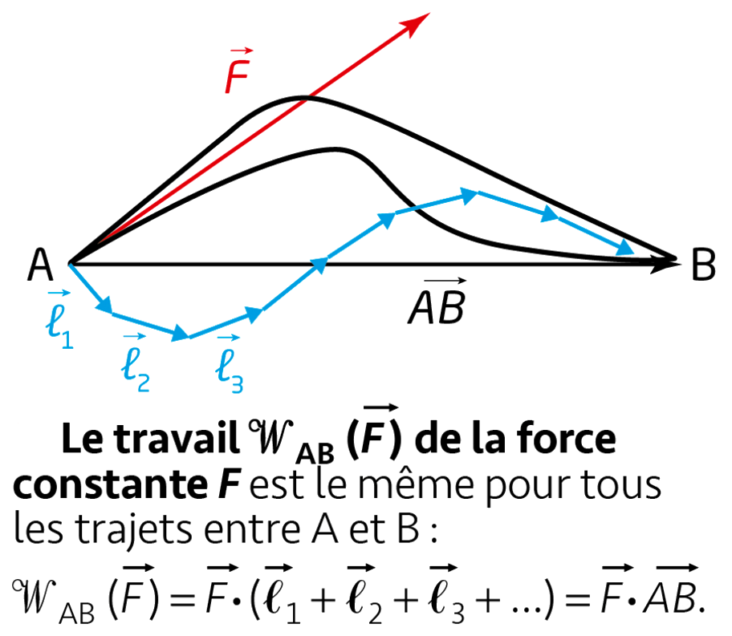
C'est une grandeur algébrique (α étant l'angle entre F et AB) :
force motrice
force ne travaille pas
force résistante
Forces conservatives et non conservatives
| Force conservative | Force non conservative | |
|---|---|---|
| Travail | Indépendant du chemin suivi | Dépend du chemin suivi |
| Réversibilité | Réversible — l'énergie stockée peut être restituée | Irréversible — énergie dissipée en chaleur |
| Signe du travail | Peut être + ou − | Toujours < 0 (résistant) |
| Énergie potentielle | Définie — ΔEp = −WAB | Non définie |
| Exemples | Poids, force électrique (condensateur), force gravitationnelle | Frottements solide/fluide, résistance de l'air |
| Conséquence sur Em | ΔEm = 0 (Em conservée) | ΔEm = WAB(f) < 0 (Em diminue) |
Théorème de l'énergie potentielle
Lorsqu'une force est conservative (poids, force électrostatique, force de rappel élastique...), son travail entre deux points A et B ne dépend pas du chemin suivi, mais uniquement des positions de départ et d'arrivée. On peut alors lui associer une énergie potentielle Ep, grandeur qui ne dépend que de la position du système, telle que :
Comprendre le signe « − » :
Ep diminue (ΔEp < 0)
Ep se transforme en Ec
Ep augmente (ΔEp > 0)
Ec se transforme en Ep (stockage)
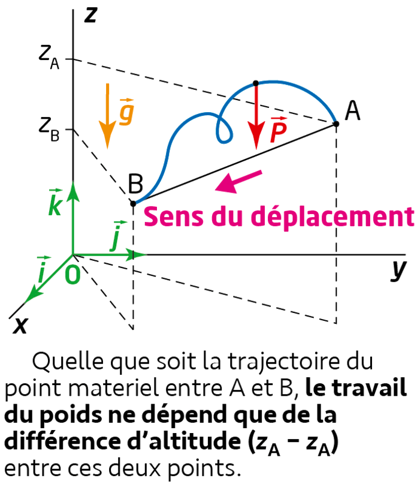
Théorème de l'énergie cinétique (TEC)
La variation de l'énergie cinétique d'un système entre A et B est égale à la somme algébrique des travaux de toutes les forces qui s'exercent sur lui :
Conséquence sur l'énergie mécanique :
Avec frottement : WAB(f) < 0 ⟹ ΔEm < 0 : énergie mécanique diminue (dissipée en chaleur).
Exercice — Démonstration et application du TEC
Forces sur la bille sur le trajet A→B (longueur L) :
- Poids P : WAB(P) = P·L·cos(90°−θ) = m·g·L·sin θ = 0,1×9,8×2,0×sin 30° = 0,98 J (moteur ✓)
- Réaction normale N ⊥ au déplacement : WAB(N) = 0 J (ne travaille pas)
- Frottement f : WAB(f) = −f·L = −0,3×2,0 = −0,60 J (résistant ✗)
Exercice — Conservation de l'énergie mécanique
Cinématique
- Vecteur position, vitesse (dérivée 1re), accélération (dérivée 2nde)
- 4 types de mouvements : rectiligne uniforme / uniformément varié, circulaire uniforme / non uniforme
- Référentiels galiléens : terrestre, géocentrique, héliocentrique
Dynamique
- 3 lois de Newton (inertie, PFD, actions réciproques)
- ΣFext = m·a dans un référentiel galiléen
- Mouvement plan dans un champ uniforme (pesanteur ou électrique)
- Méthode en 7 étapes pour établir la trajectoire
Énergie
- Travail moteur / résistant / nul (signe de cos α)
- Forces conservatives vs. frottements
- Théorème de l'énergie cinétique
- Conservation de l'énergie mécanique sans frottement
Capacités mathématiques
- Dériver / primitiver une fonction
- Résoudre une équation différentielle simple
- Représentation paramétrique d'une courbe
📝 QCM de prérequis (Hatier-clic)
📝 QCM de maîtrise des notions (Hatier-clic)
🧩 Activités interactives
🎬 Vidéos
⚠️ 3 des 7 liens vidéo transmis renvoyaient une erreur « fichier privé » côté Pearltrees (items 804812515, 804812426, 804812543) — merci de renvoyer des liens valides pour ces vidéos.
📖 Manuel
Exercices p. 260 à 269 (cinématique), p. 284 à 295 (dynamique & énergie), Activité p. 277 (accélérateur de particules), AD p. 277.